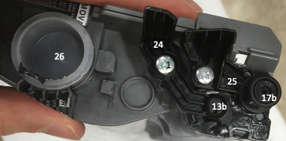

Introduction
Unlike the simpler inkjet printer cartridge, a laser printer cartridge contains many mechanical elements used in the printing process.
Exploded View of Brother TN-420 Toner Cartridge

Top Profile View
Bottom Profile View
Notable Parts
- #1 & 2: Gear Train Cover
- #3-7: Gear Train
(#3-4: Spur Gears, #5-7: Helical Gears) - #9: Torsional Spring
- #10 & 12: Mounting Points for Gears
- #11: Toner Stirrer Shaft
- #13: Primary Charge Roller Shaft
- #14: Developer Roller Shaft
- #15: Helical Gear
(Exposed at front when assembled) - #16: Metal Washer
- #17: Drum Roller Shaft
- #18: Foam Seal
- #19: Drum Roller
- #20, 1, 22-23: Cartridge Seal
- #21 Doctor Blade
- #24 & 25: Shaft Caps
- #26: Toner Refill Cap
Notes
The most entertaining part of this teardown was the impressive gear train attached to the side that served to simultaneously drive the various shafts contained inside the cartridge. The gear train consisted of gears on five separate shafts and included helical gears and a partial gear in addition to regular spur gears.
The disassembly of this toner cartridge was straightforward, requiring only some needle-nosed pliers and a #2 philips screwdriver.
Top View of Gear Train

Side View of Gear Train

Toner
Interested in learning more about how a laser printer toner cartridge works? I found this narrated animation on youtube to be a helpful resource as I tried to go about identifying part functionality during the teardown of the toner cartridge.